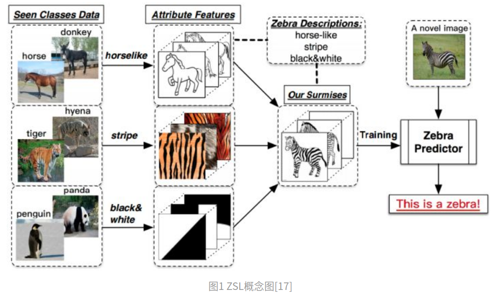
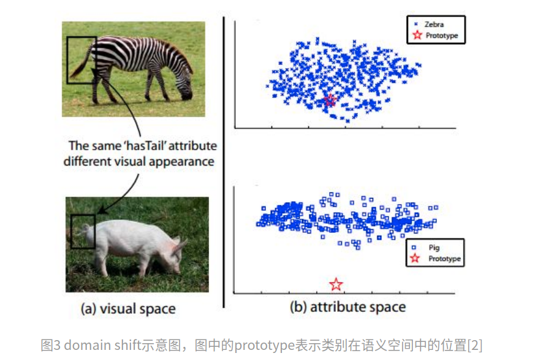
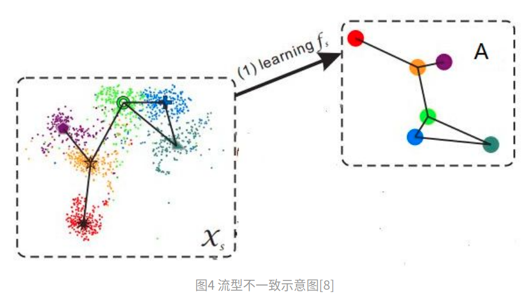

Concept
零樣本學習 Zero-Shot Learning 演算法
在訓練各種機器學習模型或是類神經網絡模型時，都需要倚靠大量的資料褲來協助訓練，
然而，並不可能對「所有」不同領域或是情況下的資料都蒐集完之後才來做模型的訓練。
為了讓模型可以更加 Generalize、同時因應各種不同領域的資料庫，
因而產生了 Zero-Shot Learning 的演算法。
而 Zero-Shot Learning 演算法的概念其實就是在模仿人類學習的方式，
人類在學習的時候其實會以概念的形式去做類推

Example
ZSL就是希望能够模仿人类的这个推理过程，使得计算机具有识别新事物的能力
類如下面的例子
沒有拿斑馬的圖訓練過(也就是"0樣本”,沒有拿斑馬的圖)
只有拿馬 老虎 熊貓等等的圖順練
但有提到斑馬可能有的特徵
如果辨識到一個斑馬的圖 他就會知道這個是斑馬
Approaches
常用演算法介紹
各種常用的手法當中，其實都有一些基本的假設和概念存在：
(1) 試圖找出共同的分布空間
(2) 對於目標資料庫進行 Adaptation
(3) 將萃取出來的特徵和已知的特徵做連結，進而達到預測未知的種類
(4) 選擇適當的樣本來做訓練
然而要進行以上的實驗都必須要達成一個最重要的前提，
也就是要找到共同的分布空間，否則以上的演算法也不會達到如此的成效
Issue (domain shift problem)
简单来说，就是同一种属性，在不同的类别中，视觉特征的表现可能很大。
如图所示，斑马和猪都有尾巴，因此在它的类别语义表示中，
“有尾巴”这一项都是非0值，但是两者尾巴的视觉特征却相差很远

Issue (semantic gap)
样本的特征往往是视觉特征，比如用深度网络提取到的特征，
而语义表示却是非视觉的，
这直接反应到数据上其实就是：
样本在特征空间中所构成的流型与语义空间中类别构成的流型是不一致的
=> 这使得直接学习两者之间的映射变得困难
